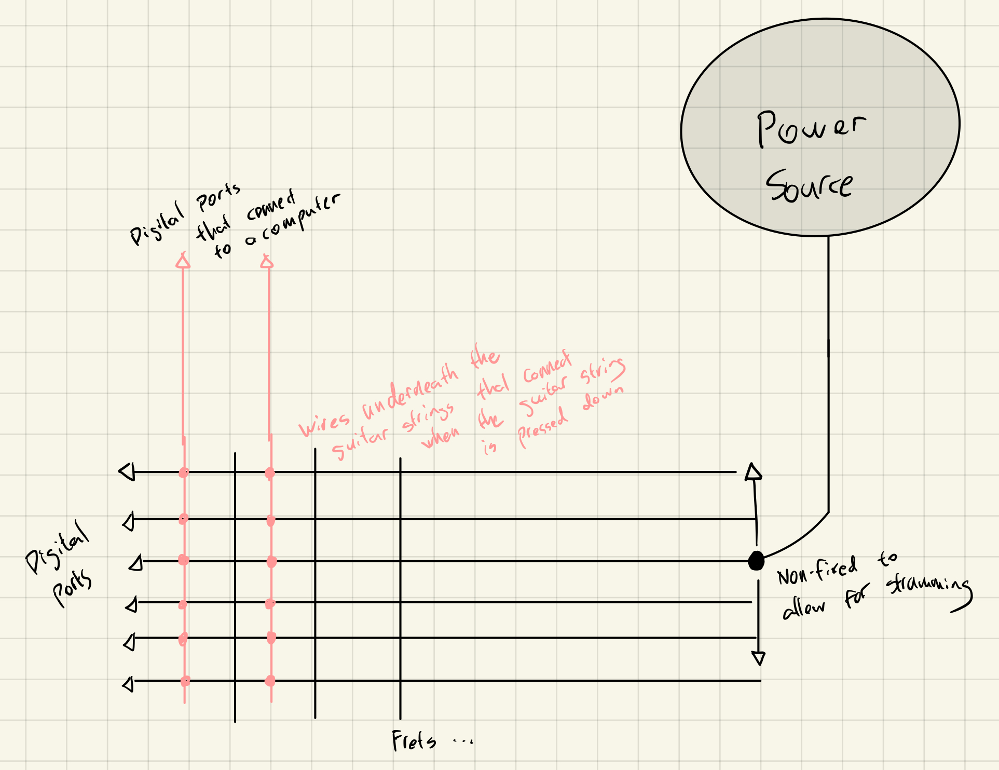
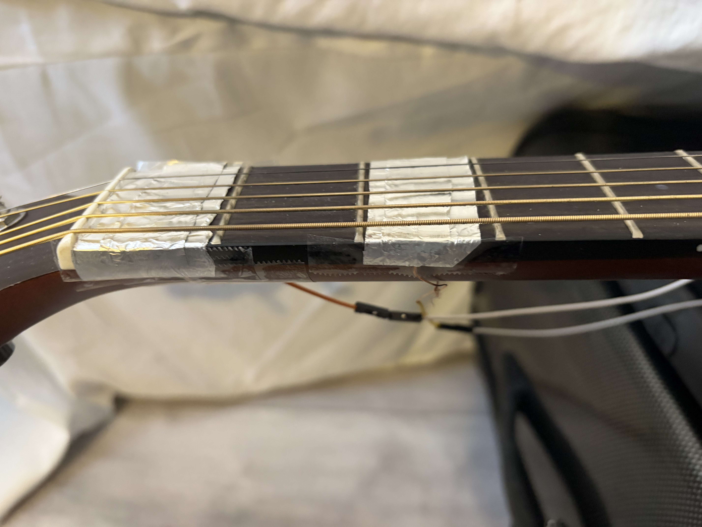
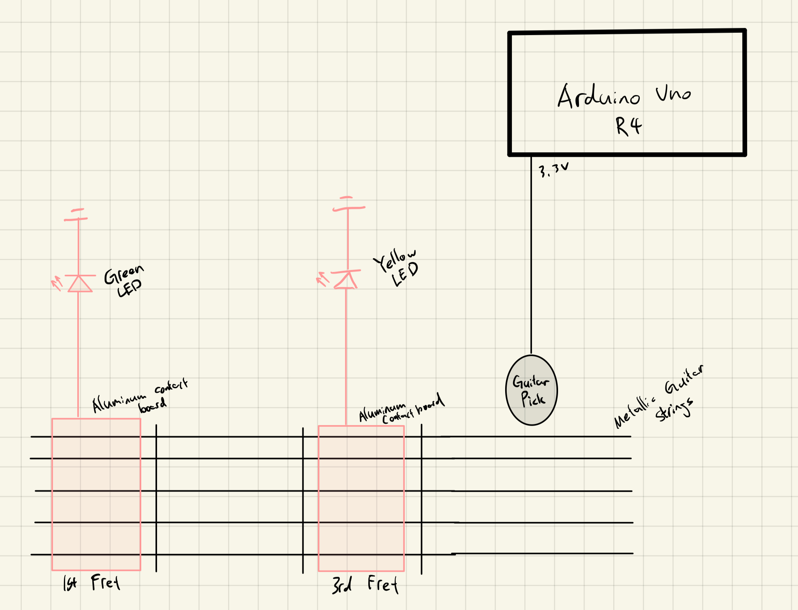

Documentation
Ideation
I started by brainstorming some potentially conductive materials that I can use for the two sides of the switch:
- Water
- Guitar Strings
The guitar strings idea immediately arose as my guitar was sitting right beside me when I was brainstorming. I decided to stick with this idea because the guitar strings are consistently conductive (as I’ve tested with my multimeter) and could produce great results that combine sound and music with physical computing. I then designed a more detailed logic for the switch that is depicted in the diagram below:

- A power source transmits electricity to each guitar string when strumming.
- The guitar strings will carry the electricity to the frets.
- When a string is pressed down on each fret, the wires underneath will carry the current from the guitar strings to the digital ports of an Arduino board. The computer will be able to know which fret the note is played on.
- The computer could visualise and add sound effects to the note played using the data.
Process and Challenges
I expanded the contact area for each fret by wrapping aluminium foil around the wires. The effects of the change were apparent. Yet, the first 3 strings still had a difficult time coming into contact with the wires when pressed down because they are too tight. I had to loosen these wires, which made the guitar out of tune, for the lack of a better solution(I also broke the 1st string accidentally while tuning). Another issue is that sometimes pressing on the 1st fret will push the string to contact the wire on the 2nd fret. This was unavoidable with my current design, so I moved the wire to the 3rd fret to widen the gap between them. This mitigated the issue for the last 3 strings. Yet, the first two strings still encountered the same issue, though in a less significant manner.

When I was reviewing the homework instructions, I noticed that I wasn’t allowed to write any code. I realised that it would make it impossible to create a very complicated logic around visualising the sound or adding sound effects. Consequently, I decided to simply connect LEDs to each of the frets to signal when strumming on the 1st or 3rd fret. The diagram below shows the specifics of how it works:

Finally, I taped the breadboard that connects the LEDs and the Arduino board to the guitar so that they are removable.
Next Steps
- Implement computer codes to allow for more interesting and complex effects.
- Improve the logic of transmitting electricity from the guitar strings to the frets.
- Connect the end of each string to digital ports so that the computer also knows which string is played. This makes it possible to coordinate the exact note that is played.
- Get a new guitar string.